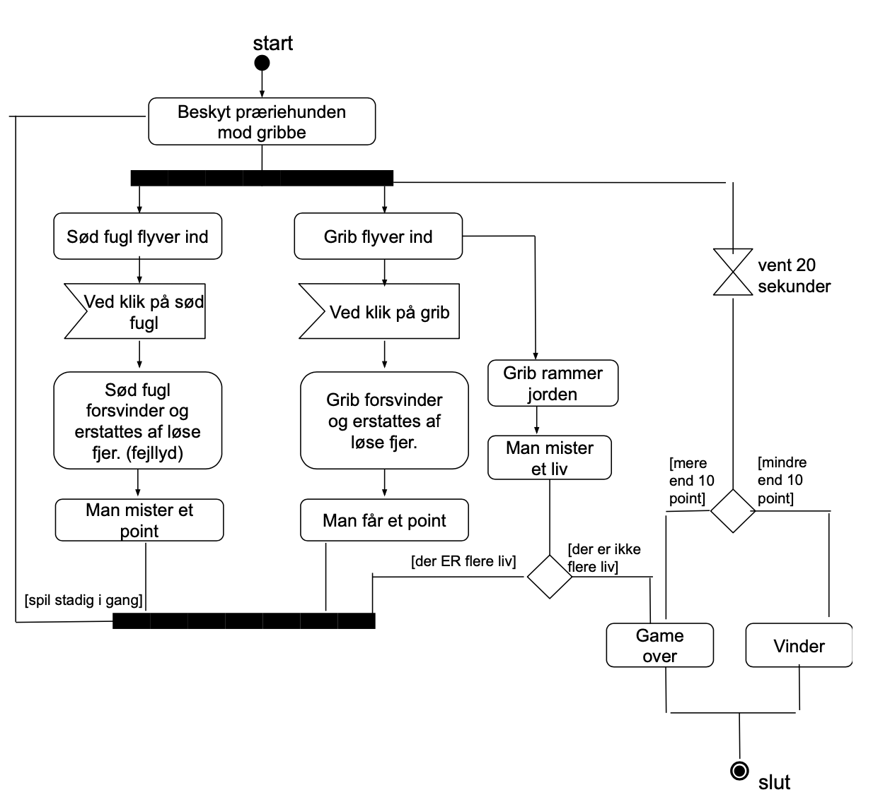

Grundlæggende
Animation
Beskrivelse
Grundlæggende Animation var et forløb på 5 uger, hvor vi kom igennem programmeringssproget javascript og lærte at lave interaktive elementer.
Her arbejdede vi selvstændigt og måtte selv bestemme konceptet.
Idé
Mindmap
Jeg startede ud med at idéudvikle mit spil – jeg var hurtigt klar over at jeg ville kaste mig ud i et western tema, så det er hovedpunktet i mit mindmap. Jeg noterede idéer til figurer og elementer til mit spil, nogle af tingene blev ændret undervejs i processen.

Spil beskrivelse
Mit spil handler om en præriehund der er på vej hjem til sin hule, man skal undervejs beskytte ham for de sultne gribbe, men passe på at man ikke ramme de uskyldige fugle som blot flyver forbi.
Moodboard
Jeg ledte efter inspiration på nettet, til hvilken stil jeg kunne tænke mig i mit spil. Her er der lidt forskellige forslag, f.eks. mørk- eller lys stemning.

Skitser
Jeg startede ud med at skitsere mine idéer ned. De fleste af dem tog jeg også udgangspunkt i, til mit endelige spil.


Titelskærm
Skærm når man taber

Illustrator
Figurer
Ved begge fugle har jeg lavet 2 versioner, én der står, som kan bruges til f.eks. titelskærm, og en der flyver som bruges i selve spillet.
Spilskærme
UI elementer

SVG
Da alle mine elementer skal være vector baseret, har jeg skulle bruge SVG billede format, som er et web baseret vector format.
For at sikre mig at alt er i vector, f.eks. tekst, har jeg brugt funktionen "create outline" i Illustrator.
Planlægning
Aktivitets diagram
State machine diagram
Vi lærte her, at inden man kaster sig ud i javascript, er det en rigtig god idé at lave et state machine diagram – det hjælper med at give et overblik over hvordan ens functions skal sættes op.